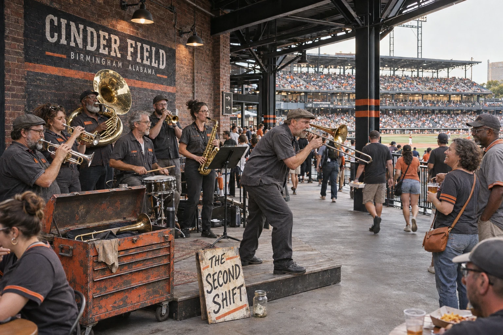
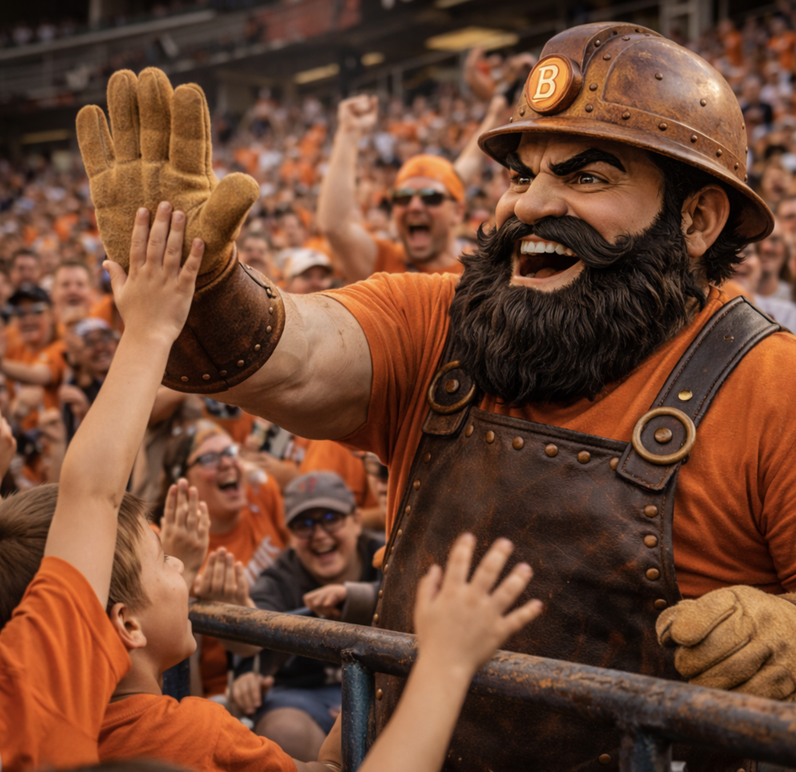
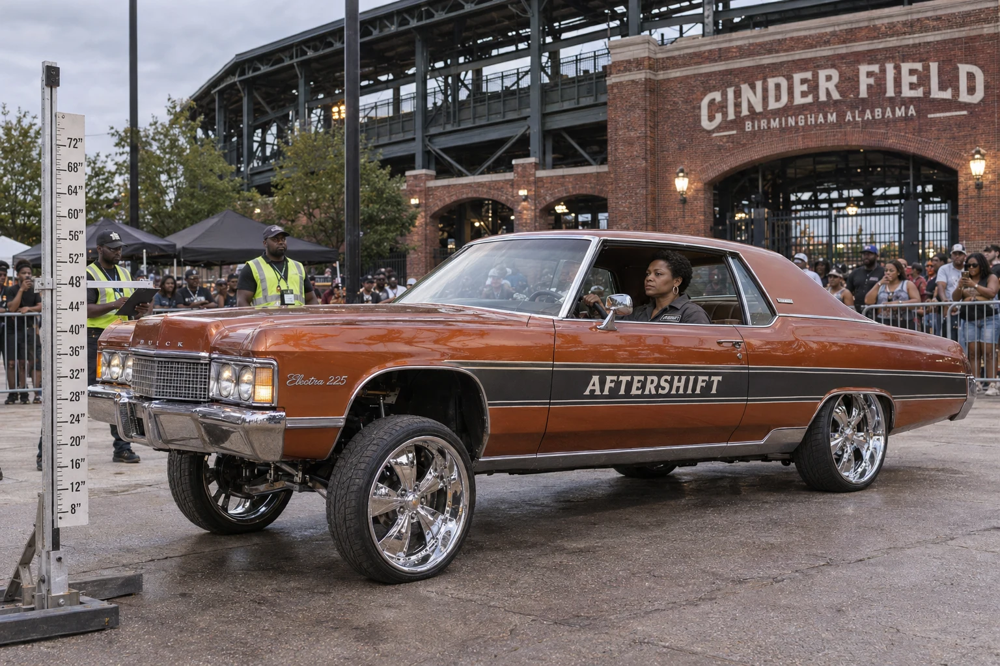

The front gate
Enter beneath the brick lintel and follow the steel roof toward the bowl.

The Second Shift is clocking in.
Meet the band →Home: Cinder Field · Colors: Charcoal and molten orange
League standings →Click a card to flip it over. Claim a player and help build their story. Players and other artifacts across GLB can be claimed, curated and crafted — by you. Look for unclaimed artifacts, then click to claim, craft your submission, and submit it to the GLB Board for review. If accepted, you’ll receive a 16-character claim code and we’ll post the artifact with your content and an attribution to the User ID you provide.
Loading the Birmingham collection…
| Player | Pos | B/T | Age | Card |
|---|---|---|---|---|
| Hassan Al-Saleh | SP | R/R | 30 | BIR-01 |
| Thierry Boucher | SP | L/L | 27 | BIR-02 |
| Jared Whitlock | SP | R/R | 29 | BIR-03 |
| Emilio Duarte | SP | R/R | 26 | BIR-04 |
| Luka Petrovic | SP | L/R | 24 | BIR-05 |
| Micah Torrence | RP | R/R | 28 | BIR-06 |
| Antonio Bela | RP | L/L | 25 | BIR-07 |
| Reese Walker | RP | R/R | 31 | BIR-08 |
| Owen Keller | C | R/R | 30 | BIR-09 |
| Malik Johnson | 1B | L/R | 27 | BIR-10 |
| Nico Valente | 2B | S/R | 26 | BIR-11 |
| Julian Santoro | SS | R/R | 28 | BIR-12 |
| Caleb Hawkins | 3B | R/R | 29 | BIR-13 |
| Isaac Morrow | CF | L/L | 25 | BIR-14 |
| Dante Rios | LF | R/R | 24 | BIR-15 |
| Cole Ramsey | RF | R/R | 32 | BIR-16 |
Brick piers, exposed steel and open sightlines connect the gate, concourse and seating bowl. Take a lap before the first pitch.
Enter beneath the brick lintel and follow the steel roof toward the bowl.
Barbecue sandwiches and lemonade pass across the counters, with the game visible beyond the queue.
A row of brass pipes turns a small corner of the concourse into a playable sound sculpture. Try a note; someone usually answers.
Trumpet, trombone, sousaphone and snare carry from a low riser beside the concourse. The seven-piece band plays before first pitch and between innings. Spare mouthpieces live in an old tool chest; the trombonist insists it has better acoustics than a case.

Brass Vulcan makes the rounds between the plaza and the stands. Around The Pour, fans stop for a picture before heading inside.
A single ceremonial strike marks the start of the home game. The sound carries through the steelwork before the first batter steps in.

Play-by-play. Keeps the count, the runners and the next pitch in focus.
In-game announcer. Lineups, substitutions and a voice that carries to the last row.


Mavis Quill’s copper-orange Electra wears AFTERSHIFT across the doors. The workwear company supplies her crew’s coveralls; Mavis supplies the patient lift and a remarkably level expression.
She holds the front end up beside the measuring mast, waits for the official, then lowers it as gently as setting down a full cup.